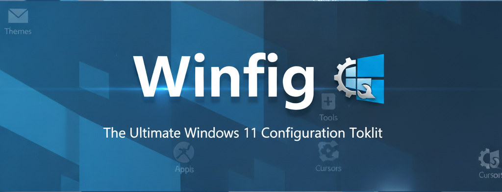

Winfig Setup: Install Windows 11

Overview¶
The Winfig Setup module streamlines Windows 11 installations on a wide range of hardware configurations, including unsupported systems. It automates the installation process while providing options to bypass common restrictions such as TPM 2.0, RAM, CPU, disk space, and Secure Boot requirements.
Key Features¶
- TPM Bypass - Install without TPM 2.0 module
- RAM Bypass - Install on systems with <4GB RAM
- CPU Bypass - Install on unsupported CPUs
- Disk Space Bypass - Install on disks with <64GB space
- Secure Boot Bypass - Install on unsupported hardware
- Account Freedom - Create local accounts without Microsoft Account
- Custom Installations - Choose edition, language, and architecture
- OOBE Customization - Bypass Out-Of-Box Experience restrictions
- App Removal - Comprehensive bloatware elimination
- Safe Execution - Only removes existing applications
- Logging - Detailed operation logs for troubleshooting
Getting Started¶
To use the Winfig Setup module, follow these steps:
Download the ISO¶
Obtain a Windows 11 ISO from the official Microsoft website:
- Ensure you select the correct edition (Home, Pro, or Enterprise) matching your license.
- Save it to a location you can easily access during setup.
Prepare the Environment¶
Before starting installation:
- Create a bootable USB drive using tools like Rufus or Ventoy, or set up a virtual machine (VM) using software like VMware or VirtualBox.
- Ensure you have administrator privileges in the environment.
- Ensure you have a working internet connection for downloading additional scripts during setup.
- Backup any important data, as the installation process may involve formatting drives.
Start the Installation¶
- Insert the bootable USB or start the VM.
- Boot from the ISO and follow the on-screen instructions.

Open Command Prompt¶
- When you reach the initial setup screen, press
Shift + F10to open the command prompt. - This allows you to run Winfig Setup scripts and other preparatory commands.
- Ensure you have administrator privileges in the environment.

Run Bypass Commands¶
Use the following commands in command prompt as soon as the installation begins:
For TPM Bypass:¶
reg add "HKLM\SYSTEM\Setup\LabConfig" /v BypassTPMCheck /t REG_DWORD /d 1 /f
For RAM Bypass:¶
reg add "HKLM\SYSTEM\Setup\LabConfig" /v BypassRAMCheck /t REG_DWORD /d 1 /f
For CPU Bypass:¶
reg add "HKLM\SYSTEM\Setup\LabConfig" /v BypassCPUCheck /t REG_DWORD /d 1 /f
For Secure Boot Bypass:¶
reg add "HKLM\SYSTEM\Setup\LabConfig" /v BypassSecureBootCheck /t REG_DWORD /d 1 /f
For Disk Space Bypass:¶
reg add "HKLM\SYSTEM\Setup\LabConfig" /v BypassDiskCheck /t REG_DWORD /d 1 /f
OneLiner (Recommended):¶
reg add "HKLM\SYSTEM\Setup\LabConfig" /v BypassTPMCheck /t REG_DWORD /d 1 /f & reg add "HKLM\SYSTEM\Setup\LabConfig" /v BypassRAMCheck /t REG_DWORD /d 1 /f & reg add "HKLM\SYSTEM\Setup\LabConfig" /v BypassCPUCheck /t REG_DWORD /d 1 /f & reg add "HKLM\SYSTEM\Setup\LabConfig" /v BypassSecureBootCheck /t REG_DWORD /d 1 /f & reg add "HKLM\SYSTEM\Setup\LabConfig" /v BypassDiskCheck /t REG_DWORD /d 1 /f

Continue Installation¶
Close the command prompt and proceed with the installation as usual.
Finish Installation¶
Complete the installation to enter OOBE (Out-Of-Box Experience).
Bypass OOBE Restrictions¶
During OOBE, press Shift + F10 again to open command prompt and run the following commands:
curl.exe -L -o bypass.cmd https://raw.githubusercontent.com/Get-Winfig/winfig-setup/main/bypass.cmd
Execute Bypass Script¶
Run the downloaded script to bypass OOBE restrictions:
bypass.cmd
Chose a template¶
Winfig Setup provides seven pre-configured templates to help you deploy Windows 11 in different environments. Each template is designed for a specific use case.
Each template includes:
- Custom system configuration (services, policies, and registry)
- Automated debloating rules
- Security or productivity tools
- Optional hardening and privacy enhancements
Template Overview¶
| Template Name | Description | Ideal Use Case |
|---|---|---|
| Local Only | Minimal setup with no online accounts. | Users who prefer local accounts and privacy. |
| Local + Debloated | Local setup with bloatware apps and services removed. | Power users seeking a streamlined experience. |
| Microsoft Account + Debloated | Microsoft Account setup with bloatware removed. | Users wanting a clean Microsoft Account experience. |
| VmWare Basic | Basic setup optimized for VMware environments. | IT professionals working with virtual machines. |
| VmWare + Debloated | VMware setup with bloatware removed. | Virtual machine users seeking performance and efficiency. |
| VirtualBox Basic | Basic setup optimized for VirtualBox environments. | IT professionals working with VirtualBox VMs. |
| VirtualBox + Debloated | VirtualBox setup with bloatware removed. | VirtualBox users seeking performance and efficiency. |
Template Details¶
Each template applies specific configurations during the Windows 11 installation process. Select the one that aligns with your environment and workflow to achieve the best balance between performance, privacy, and usability.
1. Local Only
Purpose: This template installs Windows 11 using a local account only, completely bypassing the Microsoft Account requirement. It provides a clean, privacy-respecting setup ideal for users who prefer full control over their system without any cloud dependency.
Key Features:
- Creates a local user account during setup
- Disables Microsoft account prompts and online sign-ins
- Keeps Windows Store and related services intact
Ideal For:
- Privacy-focused users
- Offline environments
- Analysts and lab setups where isolation is required
2. Local + Debloated
Purpose: Builds on the “Local Only” template with additional system optimization and bloatware removal. Designed for power users who want Windows 11 to be lightweight, fast, and distraction-free without sacrificing stability.
Key Features:
- Creates a local user account (no Microsoft login required)
- Removes unnecessary default apps (Weather, News, Xbox, etc.)
- Disables background telemetry, Cortana, and ad services
- Enables classic context menus and removes Microsoft Edge auto-pinning
- Configures Windows Update and Defender for minimal interference
- Optional PowerShell module for advanced cleaning after install
Ideal For:
- Power users and developers
- Offline or lab environments
- Users seeking a fast and clutter-free setup
3. Microsoft Account + Debloated
Purpose: Configures Windows 11 with a Microsoft Account while still performing a complete debloat and optimization pass. Ideal for users who rely on Microsoft services but want a clean, efficient system.
Key Features:
- Uses Microsoft Account for setup and synchronization
- Preserves Store functionality and OneDrive integration
- Removes unnecessary built-in apps and telemetry
- Retains compatibility with Microsoft 365 and Azure services
- Applies registry tweaks to reduce background usage
- Enables productivity-focused optimizations
Ideal For:
- Users integrated with Microsoft ecosystem
- Professionals using OneDrive, Office 365, or Outlook
- Power users who still need Microsoft cloud features
4. VMware Basic
Purpose: Optimizes Windows 11 for smooth operation inside VMware Workstation or ESXi environments. Ensures stable drivers, reduced resource consumption, and compatibility with virtualized hardware.
Key Features:
- Enables VMware guest additions (if available)
- Disables hardware-specific checks (TPM, Secure Boot, etc.)
- Disables background services unnecessary in virtualized setups
- Optimizes storage, memory, and I/O performance settings
- Enables RDP and clipboard sharing by default
- Adjusts power and sleep settings for continuous lab uptime
Ideal For:
- Digital Forensics & Cybersecurity students
- Penetration testing or malware analysis VMs
- IT professionals maintaining test labs
5. VMware + Debloated
Purpose: Extends the VMware Basic template by removing nonessential components for a lean, high-performance VM. Best suited for those who use Windows 11 in virtualized environments with limited resources.
Key Features:
- Includes all VMware Basic optimizations
- Removes bloatware and non-critical system features
- Applies performance registry tweaks and service pruning
- Disables indexing and telemetry inside VM
- Reduces background memory footprint
- Preserves networking and shared folder compatibility
Ideal For:
- DFIR (Digital Forensics & Incident Response) students
- Researchers and lab operators
- Professionals who prioritize lightweight, fast virtual machines
6. VirtualBox Basic
Purpose: Provides optimized Windows 11 configurations for Oracle VirtualBox environments. Focused on stability, compatibility, and smooth operation across VirtualBox versions.
Key Features:
- Configures Windows for VirtualBox guest drivers and services
- Disables hardware checks for unsupported setups
- Optimizes system parameters for limited CPU and RAM usage
- Enables drag-and-drop, shared clipboard, and auto-resize
- Disables unnecessary animations for performance improvement
Ideal For:
- IT and security labs
- Students learning Windows internals or OS deployment
- Lightweight testing environments
7. VirtualBox + Debloated
Purpose: Builds upon the VirtualBox Basic setup with additional debloating and optimization steps. Provides an extremely responsive and efficient VM environment for testing or development.
Key Features:
- Includes all VirtualBox Basic optimizations
- Removes unnecessary UWP apps and telemetry services
- Disables Defender, Cortana, Widgets, and background sync
- Tweaks registry for better performance and faster boot
- Reduces CPU load for smoother VirtualBox experience
- Optional PowerShell automation for cleanup and updates
Ideal For:
- Developers testing applications inside VirtualBox
- Students practicing Windows deployment automation
- Power users maintaining lightweight, persistent virtual systems
Enter Required Information¶
During the installation process, you may be prompted to enter specific information based on the selected template. This can include:
- Username
- Display Name
- Account Type (User/Administrator)

Completion¶
After entering all required configuration details, the setup will finalize and prepare Windows for installation using Sysprep.
Review Unattend File¶
Before continuing, you’ll be prompted:
“Would you like to review the generated
unattend.xmlfile?”
- Yes → Opens the file in Notepad for review or quick edits
- No → Skips review and proceeds automatically
Confirm and Proceed¶
After review, you’ll be asked to confirm:
“Proceed with system preparation and installation?”
Once confirmed:
- Sysprep runs using the generated
unattend.xml - The system reboots into OOBE, applying all chosen settings automatically
Disclaimer¶
- The installation process may take some time. Please be patient.
- Proceed at your own risk. Ensure you understand the steps before continuing.
- The author is not responsible for any issues, data loss, or system changes resulting from this process.
- The system will restart several times automatically.
- Some Command Prompt / PowerShell windows may appear temporarily for system debloating.
- Various message boxes may appear during the process.
- A specific message box will prompt you to set a password to keep your system secure — do not ignore it.
- Ensure you have a backup of important data before proceeding with the installation.
- This tool is intended for educational and testing purposes only.
- Always use in compliance with software licensing agreements.
- Modifying system settings can lead to instability; proceed with caution.